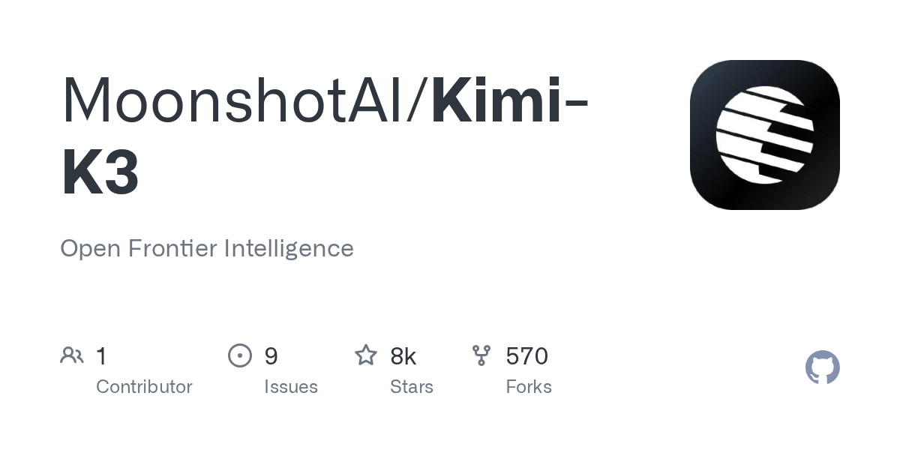

MoonshotAI/Kimi-K3 — Open Frontier Intelligence
Moonshot released Kimi K3 as open weights — a frontier reasoning model aimed squarely at the gpt-5.6 class of closed models. It was the most-starred new repo of the week (~7.9k), and the weights are already driving a wave of community benchmarks and self-hosted runs. Open-weight frontier models at this level are still rare; this is the day's headline.